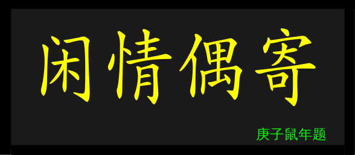

《四十二章经》
《佛说四十二章经》，简称《四十二章经》，佛教著作，据说是东汉迦叶摩腾、竺法兰汉译，一般认为是古代中国译出的第一部佛教经典。内容是把佛所说的某一段话称为一章，共选了四十二段话所编集而成。收在《大正藏》第十七册。《四十二章经》论其胜义，盖有四端：一、辞最简驯，二、义最精富，三、胪者古真，四、传最平易。用以上四重以观察于佛，则佛之全体大用明
跟论语差不多,就是"佛"这个人说的42段话
第一章
- 佛言：辞亲出家，识心达本，解无为法，名曰沙门
- 学过什么不重要,学到什么(明白什么)才重要
- 识心达本:认清主观欲望和客观本质?
- 爱欲断者，如四肢断，不复用之
第二章
- 佛言：出家沙门者，断欲去爱，识自心源，达佛深理，悟无为法，内无所得，外无所求，心不系道亦不结业，无念无作非修非证，不历诸位而自崇最，名之为道。
- 识自心源:认识你自己?
- 悟无为法:常有欲,以观其妙.常有欲,以观其徼
第三章
- 佛言：剃除须发而为沙门。受道法者，去世资财，乞求取足，日中一食，树下一宿，慎勿再矣！使人愚蔽者，爱与欲也。
第 4章
- 佛言：众生以十事为善，亦以十事为恶。何等为十？身三，口四，意三。身三者：杀、盗、淫。口四者：两舌、恶口、妄言、绮语。意三者：嫉、恚、痴。如是十事不顺圣道，名十恶行；是恶若止，名十善行耳
第 5章
- 人有众过而不自悔，顿息其心，罪来赴身，如水归海，渐成深广。若人有过自解知非，改恶行善，罪自消灭；如病得汗，渐有痊损耳
- 罪来赴身，如水归海&&改恶行善，罪自消灭 矛盾吗?
- 量变?
第6 章
- 佛言：恶人闻善，故来挠乱者，汝自禁息，当无嗔责；彼来恶者而自恶之。
第7章
- 佛言：有人闻吾守道，行大仁慈，故致骂佛，佛默不对。骂止，问曰：子以礼从人，其人不纳，礼归子乎？对曰：归矣。佛言：今子骂我，我今不纳，子自持祸归子身矣！犹响应声，影之随形，终无免离，慎勿为恶！
第8 章
- 佛言：恶人害贤者,如仰天而唾，唾不至天，还从己堕。逆风扬尘，尘不至彼，还坌己身。贤不可毁，祸必灭己
第9 章
第10 章
- 佛言：睹人施道，助之欢喜，得福甚大。沙门问曰：此福尽乎？佛言：譬如一炬之火，数千百人各以炬来分取，熟食除冥，此炬如故，福亦如之
第11 章
- 佛言：
- 饭恶人百不如饭一善人，饭善人千不如饭一持五戒者，
- 饭五戒者万不如饭一须陀洹，饭百万须陀洹不如饭一斯陀含，
- 饭千万斯陀含不如饭一阿那含，饭一亿阿那含不如饭一阿罗汉，
- 饭十亿阿罗汉不如饭一辟支佛，饭百亿辟支佛不如饭一三世诸佛，
- 饭千亿三世诸佛不如饭一无念无住无修无证之者
第12 章
- 佛言：人有二十难：
- 贫穷布施难，豪贵学道难，
- 弃命必死难，得睹佛经难，
- 生值佛世难，忍色忍欲难，
- 见好不求难，被辱不嗔难，
- 有势不临难，触事无心难，
- 广学博究难，除灭我慢难，
- 不轻未学难，心行平等难，
- 不说是非难，会善知识难，
- 见性学道难，随化度人难，
- 睹境不动难，善解方便难
第13 章
- 沙门问佛：以何因缘得知宿命？会其至道？佛言：净心守志，可会至道。譬如磨镜，垢去明存。断欲无求，当得宿命
- 志? 什么志? 哪来的志?
- 身是菩提树,心如明镜台,时时勤拂拭,勿使惹尘埃
- 本来无一物,何处惹尘埃
第14 章
- 沙门问佛：何者为善？何者最大？佛言：行道守真者善；志与道合者大。
第15 章
- 沙门问佛：何者多力？何者最明？佛言：忍辱多力，不怀恶故，兼加安健；忍者无恶，必为人尊。心垢灭尽，净无瑕秽，是为最明。未有天地逮于今日，十方所有，无有不见，无有不知，无有不闻，得一切智可谓明矣
第16 章
- 佛言：人怀爱欲不见道者，譬如澄水致手搅之，众人共临无有睹其影者；人以爱欲交错，心中浊兴，故不见道。汝等沙门当舍爱欲，爱欲垢尽，道可见矣。
第17 章
- 佛言：夫见道者，譬如持炬入冥室中，其冥即灭而明独存，学道见谛，无明即灭而明常存矣
第18 章
- 佛言：吾法念"无念"念，行"无行"行、言"无言"言，修"无修"修；会者近尔，迷者远乎！言语道断，非物所拘；差之毫厘，失之须臾。
第19 章
- 佛言：观天地念非常，观世界念非常，观灵觉即菩提，如是知识得道疾矣
第20 章
- 佛言：当念身中四大各自有名，都无我者；我既都无，其如幻耳
- 吾身与形俱灭:还有什么放不下的呢?
- 不废江河万古流:世界不以任何人为中心
- 梦幻泡影:
- 梦:欲望所至
- 幻:错觉;
- 泡:时间短;
- 影:追求不到
第21 章
- 佛言：人随情欲求于声名，声名显著，身已故矣！贪世常名而不学道，枉功劳形！譬如烧香，虽人闻香，香之烬矣，危身之火而在其后
第 22章
- 佛言：财色于人，人之不舍；譬如刀刃有蜜，不足一餐之美，小儿舐之，则有割舌之患
第 23章
- 佛言：人系于妻子舍宅甚于牢狱，牢狱有散释之期，妻子无远离之念。情爱于色，岂惮驱驰！虽有虎口之患，心存甘伏！投泥自溺，故曰凡夫；透得此门，出尘罗汉
第24 章
- 佛言：爱欲莫甚于色，色之为欲，其大无外。赖有一矣，若使二同，普天之人无能为道者矣！
第25 章
第26 章
- 天神献玉女于佛，欲坏佛意。佛言：革囊众秽，尔来何为？去！吾不用。天神愈敬，因问道意；佛为解说，即得须陀洹果
第 27章
- 佛言：夫为道者犹木在水，寻流而行不触两岸，不为人取，不为鬼神所遮，不为洄流所住，亦不腐败，吾保此木决定入海。学道之人不为情欲所惑，不为众邪所娆，精进无为，吾保此人必得道矣
第 28章
- 佛言：慎勿信汝意，汝意不可信；慎勿与色会，色会即祸生；得阿罗汉已，乃可信汝意。
第 29章
- 佛言：慎勿视女色，亦莫共言语。若与语者，正心思念：我为沙门处于浊世，当如莲华不为泥污。想其老者如母，长者如姊，少者如妹，稚者如子；生度脱心，息灭恶念
- 全都是得道者,人都死绝了
- 得道者注定是少数? 精英都得寂寞死?
第 30章
- 佛言：夫为道者，如被干草，火来须避； 道人见欲必当远之
第 31章
- 佛言：有人患淫不止，欲自断阴，佛谓之曰：若断其阴，不如断心。心如功曹，功曹若止，从者都息；邪心不止，断阴何益？佛为说偈：欲生于汝意，意以思想生，二心各寂静，非色亦非行。佛言：此偈是迦叶佛说
第 32章
- 佛言：人从爱欲生忧，从忧生怖；若离于爱，何忧何怖？
第 33章
- 佛言：夫为道者，譬如一人与万人战，挂铠出门，意或怯弱，或半路而退，或格斗而死，或得胜而还；沙门学道应当坚持其心，精进勇锐不畏前境，破灭众魔而得道果。
第 34章
- 沙门夜诵迦叶佛遗教经，其声悲紧，思悔欲退。佛问之曰：汝昔在家曾为何业？曰：爱弹琴。佛言：弦缓如何？对曰： 不鸣矣。弦急如何？对曰： 声绝矣。急缓得中如何？对曰：诸音普矣。佛言：沙门学道亦然，心若调适，道可得矣。于道若暴，暴即身疲；其身若疲，意即生恼；意若生恼，行即退矣；其行既退，罪必加矣。但清净安乐，道不失矣。
第35 章
- 佛言：如人锻铁，去滓成器 器即精好；学道之人，去心垢染 行即清净矣
第 36章
- 佛言：人离恶道得为人难；既得为人，去女即男难；既得为男，六根完具难；六根既具，生中国难；既生中国，值佛世难；既值佛世，遇道者难；既得遇道，兴信心难；既兴信心，发菩提心难；既发菩提心，无修无证难
第 37章
- 佛言：佛子离吾数千里，忆念吾戒必得道果，在吾左右虽常见吾，不顺吾戒，终不得道。
第 38章
- 佛问沙门：人命在几间？对曰：数日间。佛言：子未知道！
- 复问一沙门，人命在几间？对曰：饭食间。佛言：子未知道！
- 复问一沙 门，人命在几间？对曰：呼吸间。佛曰：善哉！子知道矣
第 39章
- 佛言：学佛道者，佛所言说皆应信顺；譬如食蜜，中边皆甜，吾经亦尔
第 40章
- 佛言：沙门行道，无如磨牛，身虽行道，心道不行；心道若行，何用行道！
- 日有精进?
- 酒肉穿肠过,佛在心中留
- 重本质,不重形式?
第 41章
- 佛言；夫为道者，如牛负重行深泥中，疲极不敢左右顾视，出离淤泥乃可苏息；沙门当观情欲甚淤泥，直心念道，可免苦矣。
第 42章
- 佛言：吾视侯王之位如过隙尘，视金玉之宝如瓦砾，
- 视纨素之服如敝帛，视大千界如一诃子，
- 视阿耨池水如涂足油；视方便门如化宝聚，
- 视无上乘如梦金帛，视佛道如眼前华，
- 视禅定如须弥柱，视涅盘如昼夕寤，
- 视倒正如六龙舞，视平等如一真地，视兴化如四时木
《金刚经》
《金刚经》是佛教重要经典。根据不同译本，全名略有不同，鸠摩罗什所译全名为《金刚般若（bōrě）波罗蜜经》，唐玄奘译本则为《能断金刚般若波罗蜜经》， 梵文 Vajracchedika-prajñāpāramitā-sūtra。《金刚经》传入中国后，自东晋到唐朝共有六个译本，以鸠摩罗什所译《金刚般若波罗蜜经》最为流行（5176字或5180字）。唐玄奘译本，《能断金刚般若波罗蜜经》共8208字，为鸠摩罗什译本的一个重要补充。其他译本则流传不广
第 1章 ：法会因由
- 如是我闻。一时佛在舍卫国祇树给孤独园。与大比丘众千二百五十人俱。尔时世尊食时。着衣持钵。入舍卫大城乞食。于其城中次第乞已。还至本处。饭食讫。收衣钵。洗足已。敷座而坐
第 2章：善现启请
- 时长老须菩提在大众中。即从座起。偏袒右肩。右膝着地。合掌恭敬而白佛言。希有世尊。如来善护念诸菩萨。善付嘱诸菩萨。世尊。善男子善女人。发阿耨多罗三藐三菩提心。云何应住云何降伏其心。佛言。善哉善哉。须菩提。如汝所说。如来善护念诸菩萨。善付嘱诸菩萨。汝今谛听。当为汝说。善男子善女人。发阿耨多罗三藐三菩提心。应如是住。如是降伏其心。唯然世尊。愿乐欲闻
第3 章：大乘正宗
- 佛告须菩提。诸菩萨摩诃萨应如是降伏其心。所有一切众生之类。若卵生若胎生若湿生若化生。若有色若无色。若有想若无想。若非有想非无想。我皆令入无余涅槃而灭度之。如是灭度无量无数无边众生。实无众生得灭度者。何以故。须菩提。若菩萨有我相人相众生相寿者相。即非菩萨
第 4章：妙行无住
- 复次须菩提。菩萨于法应无所住行于布施。所谓不住色布施。不住色声香味触法布施。须菩提。菩萨应如是布施不住于相。何以故。若菩萨不住相布施。其福德不可思量。须菩提。于意云何。东方虚空可思量不。不也世尊。须菩提。南西北方四维上下虚空可思量不。不也世尊。须菩提。菩萨无住相布施。福德亦复如是不可思量。须菩提。菩萨但应如所教住
第 5章：如理实见
- 须菩提。于意云何？可以身相见如来不。不也世尊。不可以身相得见如来。何以故。如来所说身相即非身相。佛告须菩提。凡所有相。皆是虚妄。若见诸相非相。则见如来
第6 章：正信希有
- 须菩提白佛言。世尊。颇有众生得闻如是言说章句生实信不。佛告须菩提。莫作是说。如来灭后后五百岁。有持戒修福者。于此章句能生信心以此为实。当知是人不于一佛二佛三四五佛而种善根。已于无量千万佛所种诸善根。闻是章句乃至一念生净信者。须菩提。如来悉知悉见。是诸众生得如是无量福德。何以故。是诸众生无复我相人相众生相寿者相。无法相亦无非法相。何以故。是诸众生。若心取相则为着我人众生寿者。若取法相即着我人众生寿者。何以故。若取非法相。即着我人众生寿者。是故不应取法。不应取非法。以是义故。如来常说汝等比丘。知我说法。如筏喻者。法尚应舍。何况非法。
第7 章：无得无说
- 须菩提。于意云何。如来得阿耨多罗三藐三菩提耶。如来有所说法耶。须菩提言。如我解佛所说义。无有定法名阿耨多罗三藐三菩提。亦无有定法如来可说。何以故？如来所说法，皆不可取，不可说。非法，非非法。所以者何？一切贤圣，皆以无为法而有差别
第8 章：依法出生
- 须菩提。于意云何？若人满三千大千世界七宝，以用布施。是人所得福德，宁为多不？须菩提言。甚多。世尊。何以故？是福德即非福德性。是故如来说福德多。若复有人于此经中。受持乃至四句偈等为他人说。其福胜彼。何以故？须菩提。一切诸佛及诸佛阿耨多罗三藐三菩提法皆从此经出。须菩提。所谓佛法者，即非佛法
第 9章：一相无相
- 须菩提。于意云何。须陀洹能作是念。我得须陀洹果不。须菩提言。不也世尊。何以故。须陀洹名为入流而无所入。不入色声香味触法。是名须陀洹。须菩提。于意云何。斯陀含能作是念。我得斯陀含果不。须菩提言。不也世尊。何以故。斯陀含名一往来。而实无往来。是名斯陀含。须菩提。于意云何。阿那含能作是念。我得阿那含果不。须菩提言。不也世尊。何以故。阿那含名为不来而实无不来。是故名阿那含。须菩提。于意云何。阿罗汉能作是念。我得阿罗汉道不。须菩提言。不也世尊。何以故。实无有法名阿罗汉。世尊。若阿罗汉作是念。我得阿罗汉道。即为着我人众生寿者。世尊。佛说我得无诤三昧人中最为第一。是第一离欲阿罗汉。世尊。我不作是念。我不作是念。我是离欲阿罗汉。世尊。我若作是念我得阿罗汉道。世尊则不说须菩提是乐阿兰那行者。以须菩提实无所行而名须菩提是乐阿兰那行
第 10章：庄严净土
- 佛告须菩提。于意云何。如来昔在然灯佛所。于法有所得不。世尊。如来在然灯佛所。于法实无所得。须菩提。于意云何。菩萨庄严佛土不。不也世尊。何以故。庄严佛土者即非庄严。是名庄严。是故须菩提。诸菩萨摩诃萨应如是生清净心。不应住色生心。不应住声香味触法生心。应无所住而生其心。须菩提。譬如有人身如须弥山王。于意云何。是身为大不。须菩提言。甚大。世尊。何以故。佛说非身，是名大身
第11 章：无为福胜
- 须菩提。如恒河中所有沙数。如是沙等恒河。于意云何。是诸恒河沙宁为多不。须菩提言。甚多。世尊。但诸恒河尚多无数。何况其沙。须菩提。我今实言告汝。若有善男子善女人。以七宝满尔所恒河沙数三千大千世界。以用布施。得福多不。须菩提言。甚多。世尊。佛告须菩提。若善男子善女人。于此经中乃至受持四句偈等。为他人说。而此福德胜前福德
第12 章：尊重正教
- 复次，须菩提。随说是经，乃至四句偈等。当知此处，一切世间天人阿修罗。皆应供养如佛塔庙。何况有人尽能受持读诵。须菩提。当知是人成就最上第一希有之法。若是经典所在之处。则为有佛，若尊重弟子
第 13章：如法受持
- 尔时须菩提白佛言。世尊。当何名此经。我等云何奉持。
- 佛告须菩提。是经名为金刚般若波罗蜜。以是名字汝当奉持。所以者何。须菩提。佛说般若波罗蜜。则非般若波罗蜜。须菩提。于意云何。如来有所说法不。
- 须菩提白佛言。世尊。如来无所说。
- 须菩提。于意云何。三千大千世界所有微尘是为多不。
- 须菩提言。甚多。世尊。
- 须菩提。诸微尘如来说非微尘。是名微尘。如来说世界非世界。是名世界。须菩提。于意云何。可以三十二相见如来不。
- 不也世尊。不可以三十二相得见如来。
- 何以故。如来说三十二相即是非相。是名三十二相。
- 须菩提。若有善男子善女人。以恒河沙等身命布施。若复有人，于此经中，乃至受持四句偈等。为他人说，其福甚多
- 2,4,8,16,32；阴阳（是非相）八卦；32相；64卦
第 14章：离相寂灭
- 尔时,须菩提闻说是经,深解义趣。涕泪悲泣而白佛言。希有世尊。佛说如是甚深经典。我从昔来所得慧眼。未曾得闻如是之经。世尊。若复有人得闻是经。信心清净则生实相。当知是人成就第一希有功德。世尊。是实相者则是非相。是故如来说名实相。世尊。我今得闻如是经典。信解受持不足为难。若当来世后五百岁。其有众生得闻是经信解受持。是人则为第一希有。何以故。此人无我相人相众生相寿者相。所以者何。我相即是非相。人相众生相寿者相即是非相。何以故。离一切诸相则名诸佛。佛告须菩提。如是如是若复有人得闻是经。不惊不怖不畏。当知是人甚为希有。何以故。须菩提。如来说第一波罗蜜非第一波罗蜜。是名第一波罗蜜。须菩提。忍辱波罗蜜如来说非忍辱波罗蜜。何以故。须菩提。如我昔为歌利王割截身体。我于尔时无我相无人相无众生相无寿者相。何以故。我于往昔节节支解时。若有我相人相众生相寿者相。应生嗔恨。须菩提。又念过去于五百世作忍辱仙人。于尔所世无我相无人相无众生相无寿者相。是故须菩提。菩萨应离一切相发阿耨多罗三藐三菩提心。不应住色生心。不应住声香味触法生心。应生无所住心。若心有住则为非住。是故佛说菩萨心不应住色布施。须菩提。菩萨为利益一切众生。应如是布施。如来说一切诸相即是非相。又说一切众生则非众生。须菩提。如来是真语者。实语者。如语者。不诳语者。不异语者。须菩提。如来所得法此法无实无虚。须菩提。若菩萨心住于法而行布施。如人入闇则无所见。若菩萨心不住法而行布施。如人有目。日光明照。见种种色。须菩提。当来之世若有善男子善女人。能于此经受持读诵。则为如来以佛智慧，悉知是人。悉见是人。皆得成就无量无边功德。
第 15章：持经功德
- 须菩提。若有善男子善女人。初日分以恒河沙等身布施。中日分复以恒河沙等身布施。后日分亦以恒河沙等身布施。如是无量百千万亿劫以身布施。若复有人闻此经典信心不逆其福胜彼。何况书写受持读诵为人解说。须菩提。以要言之。是经有不可思议 不可称量无边功德。如来为发大乘者说。为发最上乘者说。若有人能受持读诵广为人说。如来悉知是人悉见是人。皆得成就不可量不可称无有边不可思议功德。如是人等则为荷担如来阿耨多罗三藐三菩提。何以故。须菩提。若乐小法者。着我见人见众生见寿者见。则于此经不能听受读诵为人解说。须菩提。在在处处若有此经。一切世间天人阿修罗所应供养。当知此处则为是塔。皆应恭敬作礼围绕，以诸华香，而散其处
第 16章：能净业障
- 复次，须菩提。善男子善女人，受持读诵此经。若为人轻贱。是人先世罪业，应堕恶道。以今世人轻贱故。先世罪业，即为消灭。当得阿耨多罗三藐三菩提。须菩提。我念过去无量阿僧祇劫。于然灯佛前。得值八百四千万亿那由他诸佛。悉皆供养承事无空过者。若复有人于后末世。能受持读诵此经，所得功德。于我所供养诸佛功德。百分不及一。千万亿分乃至算数譬喻所不能及。须菩提。若善男子善女人于后末世。有受持读诵此经。所得功德我若具说者。或有人闻，心则狂乱狐疑不信。须菩提。当知是经义不可思议，果报亦不可思议。
第 17章：究竟无我
- 尔时，须菩提白佛言。世尊。善男子善女人。发阿耨多罗三藐三菩提心。云何应住云何降伏其心。佛告须菩提。善男子善女人发阿耨多罗三藐三菩提者。当生如是心。我应灭度一切众生。灭度一切众生已而无有一众生实灭度者。何以故。须菩提。若菩萨有我相人相众生相寿者相则非菩萨。所以者何。须菩提。实无有法发阿耨多罗三藐三菩提心者。须菩提。于意云何。如来于然灯佛所有法得阿耨多罗三藐三菩提不。不也。世尊。如我解佛所说义。佛于然灯佛所无有法得阿耨多罗三藐三菩提。佛言。如是如是。须菩提。实无有法如来得阿耨多罗三藐三菩提。须菩提。若有法如来得阿耨多罗三藐三菩提者。然灯佛则不与我受记。汝于来世当得作佛。号释迦牟尼。以实无有法得阿耨多罗三藐三菩提。是故然灯佛与我受记作是言。汝于来世当得作佛号释迦牟尼。何以故。如来者即诸法如义。若有人言如来得阿耨多罗三藐三菩提。须菩提。实无有法佛得阿耨多罗三藐三菩提。须菩提。如来所得阿耨多罗三藐三菩提。于是中无实无虚。是故如来说一切法皆是佛法。须菩提。所言一切法者。即非一切法。是故名一切法。须菩提。譬如人身长大。须菩提言。世尊。如来说人身长大则为非大身。是名大身。须菩提。菩萨亦如是。若作是言。我当灭度无量众生则不名菩萨。何以故。须菩提。实无有法名为菩萨。是故佛说一切法无我无人无众生无寿者。须菩提。若菩萨作是言。我当庄严佛土。是不名菩萨。何以故。如来说庄严佛土者。即非庄严是名庄严。须菩提。若菩萨通达无我法者。如来说名真是菩萨
第18 章：一体同观
- 须菩提。于意云何。如来有肉眼不？如是。世尊。如来有肉眼。
- 须菩提。于意云何。如来有天眼不。如是。世尊。如来有天眼。
- 须菩提。于意云何。如来有慧眼不。如是。世尊。如来有慧眼。
- 须菩提。于意云何。如来有法眼不。如是。世尊。如来有法眼。
- 须菩提。于意云何。如来有佛眼不。如是。世尊。如来有佛眼。
- 须菩提。于意云何。恒河中所有沙佛说是沙不。如是世尊。如来说是沙。
- 须菩提。于意云何。如一恒河中所有沙有如是等恒河。是诸恒河所有沙数佛世界。如是宁为多不。甚多。世尊。
- 佛告须菩提。尔所国土中所有众生若干种心如来悉知。何以故。如来说诸心皆为非心是名为心。所以者何。须菩提。过去心不可得。现在心不可得。未来心不可得
第19 章：法界通化
- 须菩提。于意云何。若有人满三千大千世界七宝以用布施。是人以是因缘得福多不。如是。世尊。此人以是因缘得福甚多。须菩提。若福德有实。如来不说得福德多。以福德无故。如来说得福德多
第20 章：离色离相
- 须菩提。于意云何。佛可以具足色身见不。不也世尊。如来不应以具足色身见。何以故。如来说具足色身。即非具足色身。是名具足色身。须菩提。于意云何。如来可以具足诸相见不。不也，世尊。如来不应以具足诸相见。何以故。如来说诸相具足，即非具足。是名诸相具足
第 21章：非说所说
- 须菩提。汝勿谓如来作是念。我当有所说法。莫作是念。何以故。若人言如来有所说法即为谤佛。不能解我所说故。须菩提。说法者无法可说。是名说法。尔时慧命须菩提白佛言。世尊。颇有众生于未来世。闻说是法生信心不。佛言。须菩提。彼非众生非不众生。何以故。须菩提。众生众生者。如来说非众生。是名众生
第 22章：无法可得
- 须菩提白佛言。世尊。佛得阿耨多罗三藐三菩提。为无所得耶。如是如是。须菩提。我于阿耨多罗三藐三菩提。乃至无有少法可得是名阿耨多罗三藐三菩提。
第 23章：净心行善
- 复次，须菩提。是法平等无有高下。是名阿耨多罗三藐三菩提。以无我无人无众生无寿者。修一切善法则得阿耨多罗三藐三菩提。须菩提。所言善法者。如来说非善法，是名善法。
第 24章：福智无比
- 须菩提。若三千大千世界中所有诸须弥山王。如是等七宝聚有人持用布施。若人以此般若波罗蜜经乃至四句偈等。受持读诵为他人说。于前福德百分不及一。百千万亿分，乃至算数譬喻所不能及
第25 章：化无所化
- 须菩提。于意云何。汝等勿谓如来作是念。我当度众生。须菩提。莫作是念。何以故。实无有众生如来度者。若有众生如来度者。如来则有我人众生寿者。须菩提。如来说有我者则非有我。而凡夫之人以为有我。须菩提。凡夫者如来说则非凡夫。
第 26章：法身非相
- 须菩提。于意云何？可以三十二相观如来不？须菩提言。如是如是。以三十二相观如来。佛言。须菩提。若以三十二相观如来者。转轮圣王则是如来。须菩提白佛言。世尊。如我解佛所说义。不应以三十二相观如来。尔时世尊而说偈言
第 27章:无断无灭
- 须菩提。汝若作是念。如来不以具足相故。得阿耨多罗三藐三菩提。须菩提。莫作是念。如来不以具足相故。得阿耨多罗三藐三菩提。须菩提。若作是念。发阿耨多罗三藐三菩提者说诸法断灭相。莫作是念。何以故。发阿耨多罗三藐三菩提心者。于法不说断灭相
第28 章:不受不贪
- 须菩提。若菩萨以满恒河沙等世界七宝布施。若复有人知一切法无我。得成于忍。此菩萨胜前菩萨所得功德?
- 须菩提。以诸菩萨不受福德故。
- 须菩提白佛言。世尊。云何菩萨不受福德。
- 须菩提。菩萨所作福德不应贪着。是故说不受福德
第 29章:威仪寂静
- 须菩提。若有人言，如来若来,若去,若坐,若卧。是人不解我所说义。何以故。如来者无所从来亦无所去 故名如来
第30 章:一合理相
- 须菩提。若善男子善女人。以三千大千世界碎为微尘。于意云何。是微尘众宁为多不。
- 甚多。
- 世尊。何以故。若是微尘众实有者。佛则不说是微尘众。所以者何。
- 佛说微尘众则非微尘众。是名微尘众。世尊。如来所说三千大千世界则非世界。是名世界。何以故。若世界实有者，则是一合相。如来说一合相，即非一合相。是名一合相。
- 须菩提。一合相者，则是不可说。但凡夫之人贪着其事
第 31章：知见不生
- 须菩提。若人言佛说我见人见众生见寿者见。须菩提。于意云何。是人解我所说义不。世尊。是人不解如来所说义。何以故。世尊说我见人见众生见寿者见即非我见人见众生见寿者见。是名我见人见众生见寿者见。
- 须菩提。发阿耨多罗三藐三菩提心者。于一切法。应如是知如是见如是信解不生法相。须菩提。所言法相者。如来说即非法相。是名法相。
第32 章：应化非真
- 须菩提。若有人以满无量阿僧祇世界七宝持用布施。若有善男子善女人发菩萨心者。持于此经乃至四句偈等。受持读诵为人演说其福胜彼。云何为人演说。不取于相如如不动。何以故。
佛说是经已。长老须菩提及诸比丘，比丘尼，优婆塞，优婆夷。一切世间天人阿修罗。闻佛所说皆大欢喜。信受奉行
大学
黄帝内经~素问~1
乃问于天师曰：余闻上古之人，春秋皆度百岁，而动作不衰；今时之人，年半百而动作皆衰者，时世异耶？人将失之耶？
岐伯对曰：上古之人，其知道者，法于阴阳，和于术数，食饮有节，起居有常，不妄作劳，故能形与神俱，而尽终其天年，度百岁乃去。
今时之人不然也，以酒为浆，以妄为常，醉以入房，以欲竭其精，以耗散其真，不知持满，不时御神，务快其心，逆于生乐，起居无节，故半百而衰也。
阴阳和平之人，居处安静，无为惧惧，无为欣欣，婉然从物，或与不争，与时变化，尊则谦谦，谭而不治，是谓至治
五味：酸入肝，辛入肺，苦入心，甘入脾，咸入肾，淡入胃，是谓五味

清 李渔
声容部·选姿第一
- 幻境之妙，十倍于真，故千古传之。
- 古之大贤择言而发，其所以不拂人情，而数为是论者，以性所原有，不能强之使无耳[食色，性也]
- 予一介寒生，终身落魄，非止国色难亲，天香未遇，即强颜陋质之妇，能见几人，而敢谬次音容，侈谈歌舞，贻笑于眠花藉柳之人哉！然而缘虽不偶，兴则颇佳，事虽未经，理实易谙，想当然之妙境，较身醉温柔乡者倍觉有情
- 妇人妩媚多端，毕竟以色为主,妇人本质，惟白最难
- 以人力虽巧，难拗天工，不能强既有者而使之无也
- 面为一身之主，目又为一面之主。
- 察心之邪正，莫妙于观眸子
- 目细而长者，秉性必柔；
- 目粗而大者，居心必悍；
- 目善动而黑白分明者，必多聪慧；
- 目常定而白多黑少，或白少黑多者，必近愚蒙
- 两手十指，为一生巧拙之关，百岁荣枯所系，相女者首重在此
- 造物生人以足，欲其行也
- 凡女子，一见即令人思，思而不能自己，遂至舍命以图，与生为难者，皆怪物也，皆不可解说之事也
- 古云：“尤物足以移人。”尤物维何？媚态是已。世人不知，以为美色
- 相面、相肌、相眉、相眼之法，皆可言传，独相态一事，则予心能知之，口实不能言之。口之所能言者，物也，非尤物也
声容部·修容第二
- 然予所谓“修饰”二字，无论妍媸美恶，均不可少。俗云：“三分人材，七分妆饰。”此为中人以下者言之也
- 今世之讲修容者，非止穷工极巧，几能变鬼为神
- 然一时风气所趋，往往失之过当。非始初立法之不佳，一人求胜于一人，一日务新于一日，趋而过之，致失其真之弊也
- 盥面之法，无他奇巧，止是濯垢务尽。面上亦无他垢，所谓垢者，油而已矣
- 篦之极净，使便用梳。而梳之为物，则越旧越精
- 富者用牙，贫者用角。新木之梳，即搜根剔齿者，非油浸十日，不可用也
- 名花美女，气味相同，有国色者，必有天香。天香结自胞胎，非由薰染，佳人身上实实有此一种，非饰美之词也
- 富贵之家，则需花露。花露者，摘取花瓣入甑，酝酿而成者也。蔷薇最上，群花次之。然用不须多，每于盥浴之后，挹取数匙入掌，拭体拍面而匀之。此香此味，妙在似花非花，是露非露，有其芬芳，而无其气息，是以为佳
- 香皂浴身，香茶沁口，皆是闺中应有之事
- 人问：沁口之香，为美人设乎？为伴美人者设乎？予曰：伴者居多。若论美人，则五官四体皆为人设，奚止口内之香。
- 美者用之愈增其美，陋者加之更益其陋
- 从来傅粉之面，止耐远观，难于近视，以其不能匀也
- 有法焉：请以一次分为二次，自淡而浓，由薄而厚，则可保无是患
- 人间世上，无不可用粉匀面之妇人矣
- 匀面必须匀项，否则前白后黑，有如戏场之鬼脸。至于点唇之法，又与匀面相反，一点即成，始类樱桃之体
- 原非蠢物，不止为风雅功臣，亦可谓红裙知己
- 古云：“三世长者知被服，五世长者知饮食。”俗云：“三代为宦，着衣吃饭。”古语今词，不谋而合，可见衣食二事之难也
声容部·治服第三
- 物不随人指使，遂如桎梏其身
- 章者，著也，非文采彰明之谓也;同一衣也，富者服之章其富，贫者服之益章其贫；贵者服之章其贵，贱者服之益章其贱
- 读书之难，而章句训诂之学非易事也
- 珠翠宝玉，妇人饰发之具也，然增娇益媚者以此，损娇掩媚者亦以此
- 故女人一生，戴珠顶翠之事，止可一月，万勿多时
- 富贵之家如得丽人，则当遍访名花，植于阃内，使之旦夕相亲，珠围翠绕之荣不足道也。晨起簪花，听其自择。喜红则红，爱紫则紫，随心插戴，自然合宜，所谓两相欢也。
- 寒素之家，如得美妇，屋旁稍有隙地，亦当种树栽花，以备点缀云鬟之用。他事可俭，此事独不可俭。
- 妇人青春有几，男子遇色为难。
- 尽有公侯将相、富室大家，或苦缘分之悭，或病中宫之妒，欲亲美色而毕世不能。我何人斯，而擅有此乐，不得一二事娱悦其心，不得一二物妆点其貌，是为暴殄天物，犹倾精米洁饭于粪壤之中也
- 吴门所制象生花，穷精极巧，与树头摘下者无异
- 时花之色，白为上，黄次之，淡红次之，最忌大红，尤忌木红。玫瑰，花之最香者也，而色太艳，止宜压在髻下，暗受其香，勿使花形全露，全露则类村妆，以村妇非红不爱好。
- 花中之茉莉，舍插鬓之外，一无所用
- 予曰：生今之世，行古之道，立言则善，谁其从之？不若因势利导，使之渐近自然。妇人之首，不能无饰，自昔为然矣
- 簪之为色，宜浅不宜深，欲形其发之黑也。玉为上，犀之近黄者、蜜蜡之近白者次之，金银又次之，玛瑙琥珀皆所不能
- 饰耳之环，愈小愈佳，或珠一粒，或金银一点，此家常佩戴之物，俗名“丁香”，肖其形也。若配盛妆艳服，不得不略大其形，但勿过丁香之一倍二倍。既当约小其形，复宜精雅其制
- 妇人之衣，不贵精而贵洁，不贵丽而贵雅，不贵与家相称，而贵与貌相宜
- 贵人之妇，宜披文采，寒俭之家，当衣缟素，所谓与人相称也
- 盖美女未尝择地而生，佳人不能选夫而嫁
- 并非有意而然，不过人情好胜，一家浓似一家，一日深于一日，不知不觉，遂趋到尽头处耳
- 青非青也，玄也。因避讳，故易之。
- 富贵者衣之，又觉脱去繁华之习，但存雅素之风，亦未尝失其富贵之本来
- 有复古之美名，无泥古之实害
- 不料人情厌常喜怪，不惟不攻其弊，且群然则而效之。
- 云肩以护衣领，不使沾油，制之最善者也。但须与衣同色，近观则有，远视若无，斯为得体。
- 妇人之体，宜窄不宜宽;妇人之腰，宜细不宜粗，一束以带，则粗者细，而细者倍觉其细矣
- 裙制之精粗，惟视折纹之多寡。折多则行走自如，无缠身碍足之患，折少则往来局促，有拘挛桎梏之形
- 盖下体之服，宜淡不宜浓，宜纯不宜杂
- 男子所着之履，俗名为鞋，女子亦名为鞋。男子饰足之衣，俗名为袜，女子独易其名曰“褶”，其实褶即袜也。古云“凌波小袜”，其名最雅
- 袜色尚白，尚浅红；鞋色尚深红，今复尚青，可谓制之尽美者矣
- 鞋用高底，使小者愈小，瘦者越瘦，可谓制之尽美又尽善者矣
- 古人取义命名，纤毫不爽，如前所云，以“蟠龙”名髻，“乌云”为发之类是也
- 古妇人之足，与男子无异;男女之履，同一形制
- 考之缠足，起于南唐李后主
- 但古有底，今无底耳。古有底之袜，不必着鞋，皆可行地
- 袜色与鞋色相反，袜宜极浅，鞋宜极深，欲其相形而始露也
声容部·习技第四
词曲部
跳过
演习部
跳过
居室部·房舍第一
- 人之不能无屋，犹体之不能无衣。衣贵夏凉冬燠，房舍亦然
- 及肩之墙，容膝之屋，俭则俭矣，然适于主而不适于宾
- 夫房舍与人，欲其相称。画山水者有诀云：“丈山尺树，寸马豆人
- 其立户开窗，安廊置阁，事事皆仿名园，纤毫不谬。噫，陋矣！
- 土木之事，最忌奢靡。匪特庶民之家当崇俭朴，即王公大人亦当以此为尚
- 径莫便于捷，而又莫妙于迂
- 房舍忌似平原，须有高下之势，不独园圃为然，居宅亦应如是。前卑后高，理之常也
- 居宅无论精粗，总以能避风雨为贵
- 故柱不宜长，长为招雨之媒；窗不宜多，多为匿风之薮；务使虚实相半，长短得宜
- 精室不见椽瓦，或以板覆，或用纸糊，以掩屋上之丑态，名为“顶格”，天下皆然
- 且土不覆砖，尝苦其湿，又易生尘。有用板作地者，又病其步履有声，喧而不寂
- 精美之房，宜勤洒扫。然洒扫中亦具大段学问
- 去浮尘，先用水洒，此古人传示之法
- 精舍之内，自明窗净几而外，尚有图书翰墨、古董器玩之种种，无一不忌浮尘。
- 然勤扫不如勤洒，人则知之；多洒不如轻扫，人则未知之也。
- 故运帚切记勿重；匪特勿重，每于歇手之际，必使帚尾着地，勿令悬空
- 如人先扫房舍，后及阶除，则将房舍之门紧闭，俟扫完阶除后，略停片刻，然后开门，始无灰尘入户之患
- 故洒过数日，必留一日勿洒，止令童子轻轻用帚，不致扬尘，是数日所积者一朝去之
- 欲营精洁之房，先设藏垢纳污之地。
- 先有容拙之地，而后能施其巧
- 若夫文人运腕，每至得意疾书之际，机锋一转，则断不可续。然而寝食可废，便溺不可废也。“官急不知私急”，俗不云乎？常有得句将书而阻于溺，及溺后觅之杳不可得者
居室部·窗栏第二
- 窗棂以明透为先，栏杆以玲珑为主，然此皆属第二义；具首重者，止在一字之坚，坚而后论工拙
- 总其大纲，则有二语：宜简不宜繁，宜自然不宜雕斫。
- 凡事物之理，简斯可继，繁则难久，顺其性者必坚，戕其体者易坏
- 开窗莫妙于借景，而借景之法，予能得其三昧。
- 予性最癖，不喜盆内之花，笼中之鸟，缸内之鱼，及案上有座之石，以其局促不舒，令人作囚鸾絷凤之想
- 昔人云：“会心处正不在远。”若能实具一段闲情、一双慧眼，则过目之物尽是画图，入耳之声无非诗料。
- 譬如我坐窗内，人行窗外，无论见少年女子是一幅美人图，
- 即见老妪白叟杖而来，亦是名人画幅中必不可无之物；
- 见婴儿群戏是一幅百子图，
- 即见牛羊并牧、鸡犬交哗，亦是词客文情内未尝偶缺之资
- 此窗若另制纱窗一扇，绘以灯色花鸟，至夜篝灯于内，自外视之，又是一盏扇面灯。即日间自内视之，光彩相照，亦与观灯无异也
居室部·墙壁第三
- 峻宇雕墙”，“家徒壁立”，昔人贫富，皆于墙壁间辨之。故富人润屋，贫士结庐，皆自墙壁始
- 界墙者，人我公私之畛域，家之外廓是也。莫妙于乱石垒成，不限大小方圆之定格，垒之者人工，而石则造物生成之本质也
- 砖砌之墙，乃八方公器，其理其法，是人皆知，可以置而弗道
- 至于泥墙土壁，贫富皆宜，极有萧疏雅淡之致
- 坏墙不足惜，伤人实可虑也
- 厅壁不宜太素，亦忌太华。名人尺幅自不可少，但须浓淡得宜，错综有致。予谓裱轴不如实贴
- 因予性嗜禽鸟，而又最恶樊笼，二事难全，终年搜索枯肠，一悟遂成良法
- 鸟之善鸣者，推画眉第一
- 书房之壁，最宜潇洒。欲其潇洒，切忌油漆。油漆二物，俗物也
- 石灰垩壁，磨使极光，上着也；其次则用纸糊。纸糊可使屋柱窗楹共为一色，即壁用灰垩，柱上亦须纸糊
- 天下万物，以少为贵。步幛非不佳，所贵在偶尔一见
- 人知巧莫巧于古人，孰知古人于此亦大费辛勤，皆学而知之，非生而知之者也。
- 故壁间藏书，惟燕赵秦晋则可，此外皆应避之
- 予又有壁内藏灯之法，可以养目，可以省膏，可以一物而备两室之用
居室部·联匾第四
跳过
居室部·山石第五
跳过
器玩部·制度第一
器玩部·位置第二
- 器玩未得，则讲购求；及其既得，则讲位置
- 设官授职者，期于人地相宜；安器置物者，务在纵横得当
- 有才不善用，与空国无人等也
- 使人入其户、登其堂，见物物皆非苟设，事事具有深情，非特泉石勋猷
- 未闻有颠倒其家，而能整齐其国者也
- “胪列古玩，切忌排偶。”此陈说也
- 所忌乎排偶者，谓其有意使然，如左置一物，右无一物以配之，必求一色相俱同者与之相并，是则非偶而是偶
- 幽斋陈设，妙在日异月新
- 非善用古玩者也。居家所需之物，惟房舍不可动移，此外皆当活变
- 眼界关乎心境，人欲活泼其心，先宜活泼其眼。
- 乐此者不觉其疲，但不可为饱食终日无所用心者道。
- 古玩中香炉一物，其体极静，其用又妙在极动
饮馔部·蔬食第一
- 吾观人之一身，眼耳鼻舌，手足躯骸，件件都不可少
- 口腹具而生计繁矣，生计繁而诈伪奸险之事出矣，诈伪奸险之事出，而五刑不得不设
- 草木无口腹，未尝不生；山石土壤无饮食，未闻不长养
- 如逞一己之聪明，导千万人之嗜欲，则匪特禽兽昆虫无噍类，吾虑风气所开，日甚一日，焉知不有易牙复出，烹子求荣，杀婴儿以媚权奸，如亡隋故事者哉！
- 吾谓饮食之道，脍不如肉，肉不如蔬，亦以其渐近自然也
- 此种供奉，惟山僧野老躬治园圃者，得以有之，城市之人向卖菜佣求活者，不得与焉
- 论蔬食之美者，曰清，曰洁，曰芳馥，曰松脆而已矣
- 食笋之法多端，不能悉纪，请以两言概之，曰：“素宜白水，荤用肥猪
- 肉之肥者能甘，甘味入笋，则不见其甘，但觉其鲜之至也
- 《本草》中所载诸食物，益人者不尽可口，可口者未必益人
- 苟非有毒，食之最宜。此物素食固佳，伴以少许荤食尤佳，盖蕈(蘑菇)之清香有限，而汁之鲜味无穷
- 有八字诀云：“摘之务鲜，洗之务净
- 世人制菜之法，可称百怪千奇，自新鲜以至于腌糟酱腊，无一不曲尽奇能，务求至美
- 蔬食之最净者，曰笋，曰蕈，曰豆芽；其最秽者，则莫如家种之菜
- 洗菜之法，入水宜久，久则干者浸透而易去；洗叶用刷，刷则高低曲折处皆可到，始能涤尽无遗
- 瓜、茄、瓠、芋诸物，菜之结而为实者也。实则不止当菜，兼作饭矣
- 山药则孤行并用，无所不宜，并油盐酱醋不设，亦能自呈其美，乃蔬食中之通材也
- 葱、蒜、韭三物，菜味之至重者也。菜能芬人齿颊者，香椿头是也；菜能秽人齿颊及肠胃者，葱、蒜、韭是也
- 浓则为时所争尚，甘受其秽而不辞；淡则为世所共遗，自荐其香而弗受
- 芽之初发，非特不臭，且具清香，是其孩提之心之未变也。
- 生萝卜切丝作小菜，伴以醋及他物，用之下粥最宜
- 菜有具姜桂之性者乎？曰：有，辣芥是也。制辣汁之芥子，陈者绝佳，所谓愈老愈辣是也。以此拌物，无物不佳
饮馔部·谷食第二
- 食之养人，全赖五谷。
- 即不能止食一物，亦当稍存其意，而以一物为君。使酒肉虽多，不胜食气，即使为害，当亦不甚烈耳
- 粥饭二物，为家常日用之需，其中机彀，无人不晓
- 先就粗者言之。饭之大病，在内生外熟，非烂即焦；粥之大病，在上清下淀，如糊如膏。此火候不均之故
- 其吃紧二语，则曰：“粥水忌增，饭水忌减
- 宴客者有时用饭，必较家常所食者稍精. 精用何法？曰：使之有香而已矣
- 予尝授意小妇，预设花露一盏，俟饭之初熟而浇之，浇过稍闭，拌匀而后入腕。露以蔷薇、香橼、桂花三种为上，勿用玫瑰
- 汤即羹之别名也。羹之为名，雅而近古；不曰羹而曰汤者，虑人古雅其名，而即郑重其实，似专为宴客而设者
- 有饭即应有羹，无羹则饭不能下
- 肴馔乃滞饭之具，非下饭之具也
- 宁可食无馔，不可饭无汤。有汤下饭，即小菜不设，亦可使哺啜如流
- 谷食之有糕饼，犹肉食之有脯脍
- 食之精者，米麦是也；脍之细者，粉面是也
- 糕贵乎松，饼利于薄
- 南人饭米，北人饭面，常也。《本草》云：“米能养脾，麦能补心
- 一日三餐，二米一面，是酌南北之中，而善处心脾之道也
- 北人食面多作饼，予喜条分而缕晰之，南人之所谓“切面”是也
- 南人食切面，其油盐酱醋等作料，皆下于面汤之中，汤有味而面无味，是人之所重者不在面而在汤
- 予则不然，以调和诸物，尽归于面，面具五味而汤独清，如此方是食面，非饮汤也
- 所制面有二种，一曰“五香面”，一曰“八珍面”。五善膳己，八珍饷客，略分丰俭于其间
五香者何？酱也，醋也，椒末也，芝麻屑也，焯笋或煮蕈煮虾之鲜汁也。先以椒末、芝麻屑二物拌入面中，后以酱醋及鲜汁三物和为一处，即充拌面之水，勿再用水。拌宜极匀，擀宜极薄，切宜极细，然后以滚水下之，则精粹之物尽在面中，尽勾咀嚼，不似寻常吃面者，面则直吞下肚，而止咀咂其汤也
八珍者何？鸡、鱼、虾三物之内，晒使极干，与鲜笋、香蕈、芝麻、花椒四物，共成极细之末，和入面中，与鲜汁共为八种。酱醋亦用，而不列数内者，以家常日用之物，不得名之以珍也
- 粉之名曰甚多，其常有而适于用者，则惟藕、葛、蕨、绿豆四种。藕、葛二物，不用下锅，调以滚水，即能变生成熟。
- 昔人云：“有仓卒客，无仓卒主人。”欲为仓卒主人，则请多储二物。且卒急救饥，亦莫善于此
饮馔部·肉食第三
- 食肉之人之不善谋者，以肥腻之精液，结而为脂，蔽障胸臆，犹之茅塞其心，使之不复有窍也
- 吾今虽为肉食作俑，然望天下之人，多食不如少食
- 物之折耗最重者，羊肉是也。谚有之曰：“羊几贯，帐难算，生折对半熟对半，百斤止剩念余斤，缩到后来只一段
- 羊肉之为物，最能饱人，初食不饱，食后渐觉其饱
- 猪、羊之后，当及牛、犬
- 肥始能甘，不肥则同于嚼蜡。鹅以固始为最
- 固始之鹅，金华之豕
- 以生物多时之痛楚，易我片刻之甘甜，忍人不为，况稍具婆心者乎？
- 禽属之善养生者，雄鸭是也。何以知之，知之于人之好尚。诸禽尚雌，而鸭独尚雄；诸禽贵幼，而鸭独贵长。故养生家有言：“烂蒸老雄鸭，功效比参芪。”
- 野味之逊于家味者，以其不能尽肥；家味之逊于野味者，以其不能有香也
- 野禽可以时食，野兽则偶一尝之。野禽如雉、雁、鸠、鸽、黄雀、鹌鹑之属
- 野兽之可得者惟兔，獐、鹿、熊、虎诸兽，岁不数得
- 鱼藏水底，各自为天，自谓与世无求，可保戈矛之不及矣。乌知网罟之奏功，较弓矢置罘为更捷。
- 食鱼者首重在鲜，次则及肥，肥而且鲜，鱼之能事毕矣
- 烹煮之法，全在火候得宜。先期而食者肉生，生则不松；过期而食者肉死，死则无味
- 笋为蔬食之必需，虾为荤食之必需，皆犹甘草之于药也
- 善治荤食者，以焯虾之汤，和入诸品，则物物皆鲜，亦犹笋汤之利于群蔬。笋可孤行，亦可并用；虾则不能自主，必借他物为君
- 新粟米炊鱼子饭，嫩芦笋煮鳖裙羹。”林居之人述此以鸣得意，其味之鲜美可知矣
- 独于蟹螯一物，心能嗜之，口能甘之，无论终身一日皆不能忘之，至其可嗜可甘与不可忘之故，则绝口不能形容之。
- 世间好物，利在孤行。蟹之鲜而肥，甘而腻，白似玉而黄似金，已造色香味三者之至极，更无一物可以上之
- 凡食蟹者，只合全其故体，蒸而熟之，贮以冰盘，列之几上，听客自取自食
- 凡治他具，皆可人任其劳，我享其逸，独蟹与瓜子、菱角三种，必须自任其劳。旋剥旋食则有味
- 此与好香必须自焚，好茶必须自斟，僮仆虽多，不能任其力者，同出一理
- 瓮中取醉蟹，最忌用灯，灯光一照，则满瓮俱沙，此人人知忌者也
- 初醉之时，不论昼夜，俱点油灯一盏，照之入瓮，则与灯光相习，不相忌而相能，任凭照取，永无变沙之患矣
- 天下万物之繁，未有繁于水族者
- 所谓“西施舌”者(鱼)，状其形也。白而洁，光而滑，入口咂之，俨然美妇之舌，但少朱唇皓齿牵制其根，使之不留而即下耳
- 果者酒之仇，茶者酒之敌，嗜酒之人必不嗜茶与果，此定数也
种植部
跳过
颐养部·行乐第一
- 伤哉！造物生人一场，为时不满百岁。彼夭折之辈无论矣，姑就永年者道之，即使三万六千日尽是追欢取乐时，亦非无限光阴，终有报罢之日
- 况此百年以内，有无数忧愁困苦、疾病颠连、名缰利锁、惊风骇浪，阻人燕游，使徒有百岁之虚名，并无一岁二岁享生人应有之福之实际乎
- 术士所言者术，儒家所凭者理
- 人间至乐之境，惟帝王得以有之
- 乐不在外而在心。心以为乐，则是境皆乐，心以为苦，则无境不苦
- 以不如己者视己，则日见可乐；以胜于己者视己，则时觉可忧
- 人臣之善行乐者，莫过于唐之郭子仪；而不善行乐者，则莫如李广。
- 劝贵人行乐易，劝富人行乐难。何也？则为行乐之资，然势不宜多，多则反为累人之具
- 尧曰：“富则多事。”华封人曰：“富而使人分之，何事之有？
- 兹欲劝富人行乐，必先劝之分财；劝富人分财，其势同于拔山超海，此必不得之数也
- 财多必善防，不防则为盗贼所有，而且以身殉之
- 且财多必招忌。语云：“温饱之家，众怨所归。
- 多分则难，少敛则易.处比户可封之世，难于售恩；当民穷财尽之秋，易于见德
- 少课锱铢之利，穷民即起颂扬；略蠲升斗之租，贫佃即生歌舞
- 至于悦色娱声、眠花藉柳、构堂建厦、啸月潮风诸乐事，他人欲得，所患无资，业有其资，何求弗遂？
- 穷人行乐之方，无他秘巧，亦止有退一步法。
- 因忆家居时堂宽似宇，簟冷如冰，又有群姬握扇而挥，不复知其为夏
- 即此一身，谁无过来之逆境？大则灾凶祸患，小则疾病忧伤
- 世间第一乐地，无过家庭。“父母俱存，兄弟无故，一乐也
- 人能以孩提之乐境为乐境，则去圣人不远矣。
- “逆旅”二字，足概远行，旅境皆逆境也。然不受行路之苦，不知居家之乐
- 及抵边陲，始知地狱即在人间，罗刹原非异物，而今而后，方知人之异于禽兽者几希
- 过一地，即览一地之人情，经一方，则睹一方之胜概，而且食所未食，尝所欲尝
- 太史公因游名山大川，得以史笔妙千古。是游也者，男子生而欲得，不得即以为恨者也
- 人有喜怒哀乐，天有春夏秋冬。春之为令，即天地交欢之候，阴阳肆乐之时也。人心至此，不求畅而自畅，犹父母相亲相爱，则儿女嬉笑自如，睹满堂之欢欣
- 花可熟观，鸟可倾听，山川云物之胜可以纵游，而独于房欲之事略存余地
- 分心花鸟，便觉体有余闲；并力闺帏，易致身无宁刻
- 予谓天地之气闭藏于冬，人身之气当令闭藏于夏
- 或偃卧长松之下，猿鹤过而不知。洗砚石于飞泉，试茗奴以积雪；欲食瓜而瓜生户外，思啖果而果落树头，可谓极人世之奇闻，擅有生之至乐者矣
- 予以劝人行乐，而深悔自役其形
- 为欢即欲，视其精力短长，总留一线之余地。能行百里者，至九十而思休；善登浮屠者，至六级而即下。此房中秘术，请为少年场授之
- 行乐之事多端，未可执一而论。如睡有睡之乐，坐有坐之乐，行有行之乐，立有立之乐，饮食有饮食之乐，盥栉有盥栉之乐
- 苟能见景生情，逢场作戏，即可悲可涕之事，亦变欢娱。如其应事寡才，养生无术，即征歌选舞之场，亦生悲戚。兹以家常受用，起居安乐之事，因便制宜，各存其说于左。
- 予曰：“天地生人以时，动之者半，息之者半。动则旦，而息则暮也。
- 养生之诀，当以善睡居先。睡能还精，睡能养气，睡能健脾益胃，睡能坚骨壮筋
- 地之善者有二：曰静，曰凉。不静之地，止能睡目
- 然使忙人假寐，止能睡眼，不能睡心，心不睡而眼睡，犹之未尝睡也
- 闲则眼未阖而心先阖，心已开而眼未开；已睡较未睡为乐，已醒较未醒更乐，此闲人之宜睡也。然天地之间，能有几个闲人？
- 吾人燕居坐法，当以孔子为师，勿务端庄而必正襟危坐
- 不若安步当车之人，五官四体皆能适用
- 事属可缓，则以安步当车；如其急也，则以疾行当马
- 立分久暂，暂可无依，久当思傍
- 宴集之事，其可贵者有五：
- 饮量无论宽窄，贵在能好；
- 饮伴无论多寡，贵在善谈；
- 饮具无论丰啬，贵在可继；
- 饮政无论宽猛，贵在可行；
- 饮候无论短长，贵在能止
- 若夫家庭小饮与燕闲独酌，其为乐也，全在天机逗露之中，形迹消忘之内。有饮宴之实事，无酬酢之虚文。睹儿女笑啼，认作班斓之舞；听妻孥劝诫，若闻金缕之歌
- 读书，最乐之事，而懒人常以为苦；清闲，最乐之事，而有人病其寂寞
- 盛暑之月，求乐事于黑甜之外，其惟沐浴乎？
- 自严冬避冷，不宜频浴外，凡遇春温秋爽，皆可借此为乐
- 至于富室大家，扩盆为屋，注水于池者，冷则加薪，热则去火，自有以逸待劳之法，想无俟贫人置喙也
- 弈棋尽可消闲，似难借以行乐；弹琴实堪养性，未易执此求欢。以琴必正襟危坐而弹，棋必整槊横戈以待
- 故喜弹不若喜听，善弈不如善观。人胜而我为之喜，人败而我不必为之忧，则是常居胜地也
- 花鸟二物，造物生之以媚人者也。既产娇花嫩蕊心代美人，又病其不能解语，复生群鸟以佐之
- 鸟之悦人以声者，画眉、鹦鹉二种
- 鹤、鹿二种之当蓄，以其有仙风道骨也。然所耗不赀，而所居必广，无其资与地者，皆不能蓄。且种鱼养鹤，二事不可兼行，利此则害彼也。然鹤之善唳善舞，与鹿之难扰易驯，皆品之极高贵者，麟凤龟龙而外，不得不推二物居先矣
- 鸡司晨，犬守夜，猫捕鼠，皆有功于人而自食其力者也
- 鸡栖于埘，犬宿于外，居处饮食皆不及焉
- 筑成小圃近方塘，果易生成菜易长。抱瓮太痴机太巧，从中酌取灌园方
颐养部·止忧第二
- 可忘者非忧，忧实不可忘也
- 忧之途径虽繁，总不出可备、难防之二种
- 语云：“临渊羡鱼，不如退而结网。”慰人忧贫者，必当授以生财之法；慰人下第者，必先予以必售之方
- 拂意之境，无人不有，但问其易处不易处，可防不可防
- 不测之忧，其未发也，必先有兆
- 盖天道好还，不敢尽私其人，微示公道于一线耳
- 止忧之法有五：一曰谦以省过，二曰勤以砺身，三曰俭以储费，四曰恕以息争，五曰宽以弥谤
颐养部·调饮啜第三
- 《食物本草》一书，养生家必需之物。然翻阅一过，即当置之。若留匕箸之旁，日备考核，宜食之物则食之，否则相戒勿用
- 生平爱食之物，即可养身，不必再查《本草》
- 肉与食较，则食为君而肉为臣；姜、酱与肉较，则又肉为君而姜、酱为臣矣
- 虽有好不好之分，然君臣之位不可乱也。他物类是
- 凡食一物而凝滞胸膛，不能克化者，即是病根，急宜消导
- 欲调饮食，先匀饥饱。大约饥至七分而得食，斯为酌中之度，先时则早，过时则迟。然七分之饥，亦当予以七分之饱
- 宁失之少，勿犯于多
- 贫民之饥可耐也，富民之饥不可耐也，疾病之生多由于此。从来善养生者，必不以身为戏
- 喜怒哀乐之始发，均非进食之时。然在喜乐犹可，在哀怒则必不可
- 怒时食物易下而难消，哀时食物难消亦难下
- 倦时勿食，防瞌睡也.烦闷时勿食，避恶心也
- 食一物，务得一物之用。得其用则受益，不得其用，岂止不受益而已哉！
颐养部·节色欲第四
- 行乐之地，首数房中
- 谓阴阳之不可相无，忧天地之不可使半也
- 凡借女色养身而反受其害者，皆是男为女用，
- 使终日不见可欲而遇之一旦，其心之乱也，十倍于常见可欲之人
- 不如日在可欲之中，与若辈习处，则是“司空见惯浑闲事”矣，心之不乱
- 忧愁困苦之际，无事娱情，即念房中之乐。此非自好，时势迫之使然也
- 饥、寒、醉、饱四时，皆非取乐之候
- 总之，交媾者，战也，枵腹者不可使战
- 劳极思逸，人之情也，而非所论于耽酒嗜色之人。世有喘息未定，即赴温柔乡者
- 节之之法有缓急二种：能缓者，必过一夕二夕；不能缓者，则酣眠一觉以代一夕，酣眠二觉以代二夕。惟睡可以息劳，饮食居处皆不若也。
- 新婚燕尔，不必定在初娶，凡妇人未经御而乍御者，即是新婚
- 乐莫乐于新相知，但观此一夕之为欢，可抵寻常之数夕，即知此一夕之所耗，亦可抵寻常之数夕
- 善此当用何法？曰：“静之以心，虽曰燕尔新婚，只当行其故事
- 最宜节欲者隆冬，而最难节欲者亦是隆冬；最忌行乐者盛暑，而最便行乐者又是盛暑
- 冬夜非人不暧，贴身惟恐不密，倚翠偎红之际，欲念所由生也
- 节之为言，示能守也；能守则日与周旋而神旺，无守则略经点缀而魂摇。由有度而驯至能守，由能守而驯至自然，则无时不堪昵玉，有暇即可怜香。将鄙是集为可焚，而怪湖上笠翁之多事矣
颐养部·却病第五
- 病之起也有因，病之伏也有在，绝其因而破其在，只在一字之和。俗云：“家不和，被邻欺
- 人身所当和者，有气血、脏腑、脾胃、筋骨之种种，使必逐节调和，则头绪纷然，顾此失彼，穷终日之力，不能防一隙之疏
- 有务本之法，止在善和其心。心和则百体皆和。即有不和，心能居重驭轻，运筹帷幄，而治之以法矣
- 然而和心之法，则难言之。哀不至伤，乐不至淫，怒不至于欲触，忧不至于欲绝。“略带三分拙，兼存一线痴；微聋与暂哑，均是寿身资。”此和心诀也。三复斯言，病其可却。
- 病已至而退之，其法维何？曰：止在一字之静
- 径愈宽则药愈杂，药愈杂则病愈繁矣
- 昔许胤宗谓人曰：“古之上医，病与脉值，惟用一物攻之。今人不谙脉理，以情度病，多其药物以幸有功，譬之猎人，不知兔之所在，广络原野以冀其获，术亦昧矣
颐养部·疗病第六
- 天地之间只有贫生怕死之人，并无起死回生之药。“药医不死病，佛度有缘人
- 病不服药，如得中医。”此八字金丹，救出世间几许危命！
- 药不执方，医无定格
- 一曰本性酷好之物，可以当药。凡人一生，必有偏嗜偏好之一物，如文王之嗜菖蒲菹，曾之嗜羊枣，刘伶之嗜酒，卢仝之嗜茶，权长孺之嗜瓜，皆癖嗜也。癖之所在，性命与通，剧病得此，皆称良药
- 二曰其人急需之物，可以当药。人无贵贱穷通，皆有激切所需之物。如穷人所需者财，富人所需者官，贵人所需者升擢，老人所需者寿，皆卒急欲致之物也。惟其需之甚急，故一投辄喜，喜即病痊
- 疗诸病易，疗贫病难。世人忧贫而致疾，疾而不可救药者，几与恒河沙比数
- 三曰一心钟爱之人，可以当药。人心私爱，必有所钟。常有君不得之于臣，父不得之于子，而极疏极远极不足爱之人，反为精神所注，性命以之者
- 四曰一生未见之物，可以当药。欲得未得之物，是人皆有，如文士之于异书，武人之于宝剑，醉翁之于名酒，佳人之于美饰，是皆一往情深，不辞困顿，而欲与相俱者也
- 五曰平时契慕之人，可以当药。凡人有生平向往，未经谋而者，如其惠然肯来，以此当药，其为效也更捷。昔人传韩非书至秦，秦王见之曰：“寡人得见此人与之游，死不恨矣！
- 六曰素常乐为之事，可以当药。病人忌劳，理之常也
- 七曰生平痛恶之物与切齿之人，忽而去之，亦可当药。